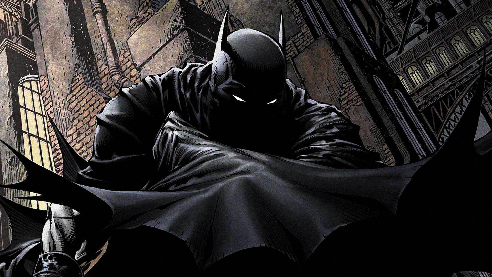
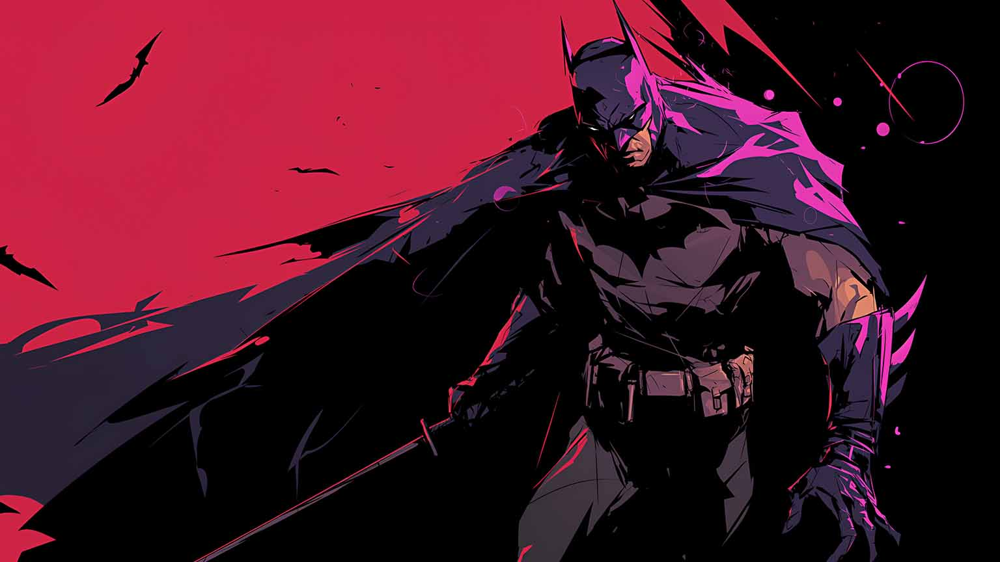

Quem é o Batman?
Batman (Bruce Wayne) é um personagem da DC Comics que atua como justiçeiro de Gotham. Ele não tem superpoderes: sua força está em treinamento, inteligencia e recursos (ou seja, rico)
Nas histórias, Gotham costuma representar problemas socias reais: desigualdade, corrupção e violência urbana. Muitos quadrinhos usam o Batman como forma de crítica social, mostrando como decisões políticas, interesses econômicos, falahs nas instituições e o auoritarismo afetam o cotidiano das pessoas, especialmente nas periferias.
Galeria

